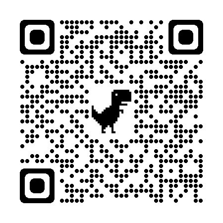

Zeit für Osborn, seine Fragen
und kreatives Denken
Bist du bereit, Innovation und Typografie aus einer neuen Perspektive zu betrachten? Mit der HomeScreen-App, inspiriert von Alex Faickney Osborns Fragetechniken, bekommst du einen digitalen Begleiter, der deine Kreativität beflügelt.
🌟 Für wen?
Ideal für alle, die in „Innovation by Design“ oder „Layout & Typografie“ neue Ansätze suchen.
📲 Was bringt's?
- Frische Impulse für kreative Herausforderungen
- Sofortige Anwendung für Projekte und Übungen
- Intuitive Fragetechniken, die dich überraschen
🔗 Loslegen:
👉 6936.de/osborn
📱 Scanne den QR-Code und starte direkt!

Color by gehirngerecht.digital
Eine Büro joergoyen.de Produktion 12.2023